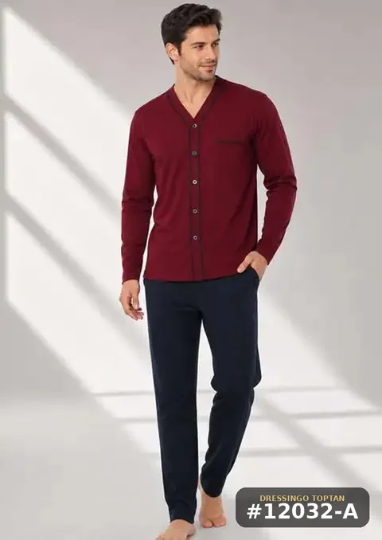
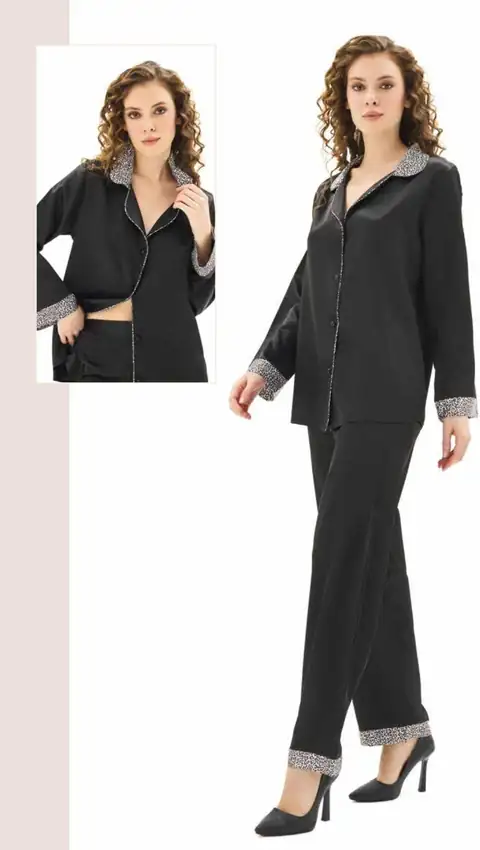

الرئيسية ‹ المدونة
مدونة Dressingo
دليلك العملي لشراء ملابس تركية بالجملة: من أول طلب إلى وصول البضاعة لمحلك.

كيف تستورد الملابس من تركيا لمحلك؟ دليل عملي خطوة بخطوة
دليل مبسّط لصاحب المحل: كيف تبدأ الشراء بالجملة من تركيا، من اختيار المورد وفهم السيري والحد الأدنى، إلى الشحن والجمارك وإعادة الطلب.7 دقائق قراءة
الشحن والكارغو من إسطنبول إلى الدول العربية: الخيارات والمدة وما يؤثر على التكلفة
مقارنة مبسّطة بين الشحن الجوي السريع والكارغو والبري والبحري من تركيا إلى الدول العربية، مع مدد تقديرية والعوامل التي تحدد تكلفة الشحن.7 دقائق قراءة
ما هو «السيري» في الجملة التركية؟ وكيف تطلب المقاسات بذكاء
شرح بسيط لنظام السيري (Seri) في الجملة التركية: ماذا يعني، كم قطعة فيه، وكيف تختار المقاسات والكميات لمحلك دون أن تتراكم عندك مقاسات لا تُباع.6 دقائق قراءة
كيف تختار بيجامات وملابس بيت تبيع بسرعة في محلك حسب الموسم؟
دليل عملي لاختيار البيجامات وملابس البيت بالجملة لكل موسم: الأقمشة المناسبة للشتاء والصيف، الألوان، المقاسات، وتوقيت الطلب المناسب.7 دقائق قراءةالجمارك والأوراق عند استيراد الملابس من تركيا: الصورة العامة
نظرة عامة على الأوراق المعتادة عند استيراد الملابس من تركيا: الفاتورة التجارية، قائمة التعبئة، شهادة المنشأ، رمز HS، وشهادات المطابقة، مع نصيحة التحقق من قواعد بلدك.7 دقائق قراءة